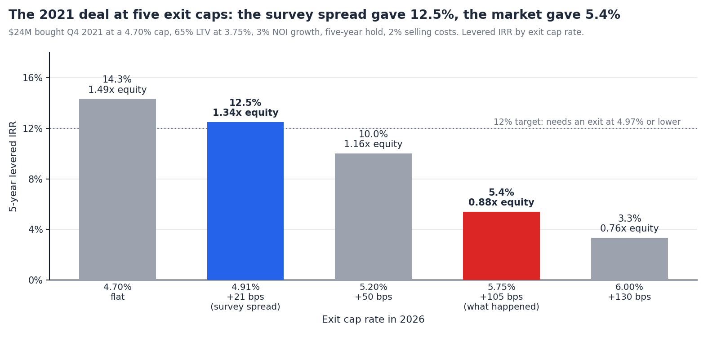
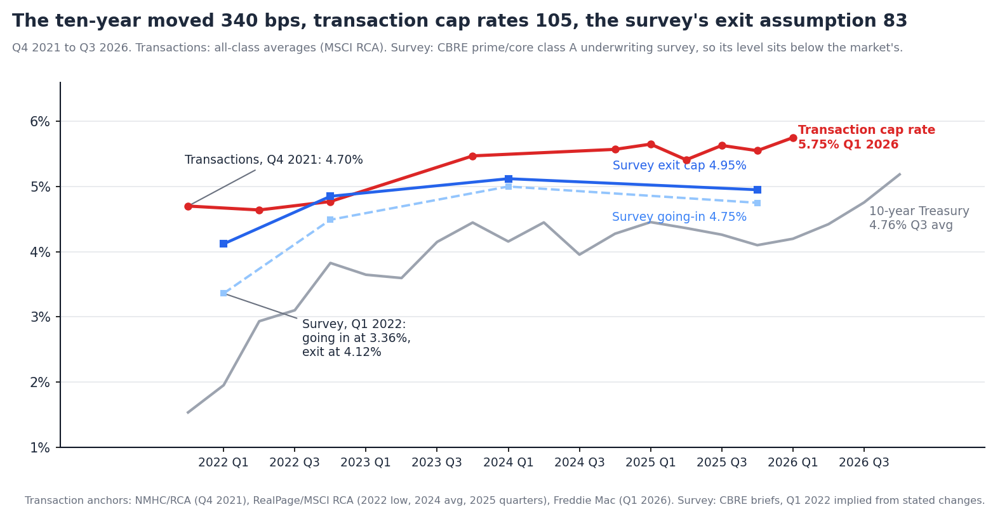

The Survey Said +21 bps. The Market Did +105.
Summary. The notes in this series have audited a 2021 pro forma one input at a time: the cost of debt, the loan size, the refinance, the expense line. This one is about the input that decides the IRR. CBRE's multifamily underwriting survey has carried an exit cap rate 12 to 36 basis points above the going-in rate for four years; the Q4 2025 reading is 4.75% in and 4.95% out, a 20 bp spread. Apartment transaction cap rates went from 4.70% in Q4 2021 to 5.75% in Q1 2026, 105 bps, while the ten-year Treasury went from a 1.53% quarterly average to 4.96%.
We take the representative $24M building bought in Q4 2021 and sell it in 2026 at five exit caps, from the survey convention to what the market did. Then we ask which of the four cap rates in circulation this quarter belongs in which cell of the model. Findings:

Four different numbers describe the multifamily cap rate in the second half of 2026, and each is correct for what it measures.
The underwriting survey: 4.75% in, 4.95% out. CBRE's quarterly Multifamily Underwriting Survey asks its own capital markets professionals in 19 markets what core and value-add buyers are assuming. For Q4 2025: core going-in 4.75%, exit 4.95%, unlevered IRR target 7.70%, three-year rent growth 2.7%. Value-add: 5.26% in, 5.38% out, 9.36% IRR. The survey describes prime, institutional-quality assets in major markets. Its level is not the market average and is not meant to be.
The transaction average: 5.55% to 5.79%. MSCI Real Capital Analytics, as reported by RealPage, puts the average cap rate on closed apartment sales at 5.55% in Q4 2025, 5.65% in Q1 2025 and 5.41% in Q2, with 2024 and 2025 both averaging about 5.7%. Freddie Mac's Q1 2026 investor deck reports a 20 bp rise in the quarter, to roughly 5.75%. One commentary puts Q2 2026 at 5.79%, the highest since 2015. These are all classes, all markets, weighted by what traded.
The cap rate survey: "essentially flat." CBRE's separate H1 2026 Cap Rate Survey, 200 professionals and 3,600 estimates across 50 markets, found the all-property average unchanged over the half despite higher Treasury yields, with infill multifamily "the most bearish subtype." In its six-month outlook, 63% expect no change, 17% expect cap rates to rise, up from a smaller share in H2 2025, and 20% expect compression, down from 42%. The median respondent said the ten-year would need to fall to 3.75% to produce a notable rise in sales volume.
Lender rate sheets: 4.70% to 4.75%. Several lender and broker pages publish cap rate tables by class with Class A in major metros at 4.70% to 4.75%. These are marketing pages, updated irregularly, and they describe the best asset in the best market.
The spread between the first and second numbers, about 80 to 100 bps, is the gap between a prime Class A survey and an all-class transaction average. It has been roughly that wide for three years. The problem is not which level to use. The problem is the second column of the survey.
CBRE did not run the survey for most of 2020 and 2021, so its first reading after the pandemic is Q1 2022, which its own later briefs describe as the record low. The Q4 2022 brief reports going-in cap rates up 113 bps since Q1 2022 to 4.49%, and exit caps up 73 bps to 4.85%, which puts the Q1 2022 assumptions at 3.36% in and 4.12% out, a 76 bp spread. Pre-pandemic the spread was 58 bps.
| Survey vintage (prime / core) | Going-in | Exit | Spread | Transaction cap, same quarter | 10-year, quarterly avg |
|---|---|---|---|---|---|
| Q1 2022 (implied) | 3.36% | 4.12% | 76 bps | 4.64% (Q2 low) | 1.95% |
| Q4 2022 | 4.49% | 4.85% | 36 bps | ~4.8% | 3.83% |
| Q1 2024 | 5.00% | 5.12% | 12 bps | ~5.5% | 4.16% |
| Q4 2025 | 4.75% | 4.95% | 20 bps | 5.55% | 4.10% |
| Q1 2026 | 5.75% | 4.20% |
The exit followed the going-in. Over four years the survey's going-in rate rose 139 bps and its exit assumption rose 83. The spread between them compressed from 76 bps to 12 and settled near 20. At no point did the exit assumption anticipate the move in transaction cap rates; it recorded it afterwards, at a discount. In Q1 2022 the survey's exit cap was 52 bps below where transactions already were. In Q4 2025 it was 60 bps below.
The convention is the going-in plus a margin. Every reading in the table sets the exit a few basis points above the entry. That is a statement about the asset ageing, not about where cap rates will be in five years. It would be the same number if the ten-year were 1.5% or 5.0%, and in this period it was both.

The building is the one from the earlier notes: $24M in Q4 2021 at a 4.70% cap, $1.128M of NOI, financed at 65% with a ten-year agency loan at 3.75%, 30-year amortization. NOI grows 3% a year. The buyer sells after five years at 2% cost, applying the exit cap to forward NOI.
| Exit cap in 2026 | vs going-in | Sale price | 5-yr levered IRR | Equity multiple |
|---|---|---|---|---|
| 4.70% | flat | $28.1M | 14.3% | 1.49x |
| 4.91% | +21 bps, the survey convention | $26.9M | 12.5% | 1.34x |
| 5.20% | +50 bps | $25.4M | 10.0% | 1.16x |
| 5.75% | +105 bps, what happened | $23.0M | 5.4% | 0.88x |
| 6.00% | +130 bps | $22.0M | 3.3% | 0.76x |
The survey convention produced a deal. At 4.91% out, the model shows 12.5% levered and a sale at $26.9M. That is the number that cleared the investment committee in 2021, and it was not aggressive by the standards of the time: CBRE's own prime survey had a 76 bp spread, and this uses 21.
The market produced a loss. At 5.75%, the building sells for $23.0M against a $24.0M cost and a $14.1M loan balance. After selling costs the equity comes back at 0.88x. Five years of 3% NOI growth, which this building got, and a 3.75% fixed loan, which was the best outcome available, together recovered 88 cents on the dollar. Nothing in the operating plan went wrong. The exit cap did all of it.
The number the model needed. To return 12%, the exit had to come in at 4.97% or lower. Every 25 bps of exit cap above the going-in rate on this deal is worth roughly 200 bps of IRR and $1.2M of sale price.
Cap rates are not a function of the going-in rate plus a margin. Over any period long enough to matter, they are a function of the risk-free rate plus a spread, and the spread has a history.
The spread. Arbor and Chandan Economics put the long-run average spread between apartment cap rates and the ten-year at about 289 bps since 2010. In Q2 2026 it was 118 bps. On the October 22 close, with the ten-year at 4.96% and cap rates near 5.75%, it is about 80 bps. The spread has not been this thin for this long since the series began, and it is the reason the cap rate survey's respondents are split for the first time in two years.
What the spread implies. Three readings of where the exit cap could be in five years, none of them forecasts:
| If the ten-year is | and the spread is | the cap rate is | Change from 5.75% |
|---|---|---|---|
| 4.96% (Oct 22) | 118 bps (Q2 2026) | 6.14% | +39 bps |
| 4.96% (Oct 22) | 289 bps (2010 avg) | 7.85% | +210 bps |
| 3.75% (CBRE respondents' threshold) | 289 bps (2010 avg) | 6.64% | +89 bps |
None of those is the survey's 5.96%. The only way to reach the survey convention is for the ten-year to fall to about 3.1% with the spread staying at its all-time low, or for the spread to compress further still.
Today's buyer, same test. Buying at 5.75% with a 7.0% coupon and 58% leverage, the survey convention of +21 bps models a 10.2% levered IRR. At +50 bps it is 8.3%. At +105 bps, the move the last five years delivered, it is 4.9%. The asymmetry is the point: a flat exit adds 140 bps to the survey case; the historical move takes away 530.
Three things follow.
Set the exit cap from the ten-year and a spread, not from the going-in rate. The going-in rate is a price; the exit cap is a forecast. A model that writes exit = entry + 25 bps has made a forecast that the risk-free rate will not move in five years, without saying so. Writing it as the forward ten-year plus a stated spread makes the forecast visible and arguable.
Show the exit cap that returns the target, next to the one assumed. On the 2021 deal the break-even for 12% was 4.97%, 27 bps above the entry. On a deal today at 5.75% it is similar. That number, printed on the summary page, tells a committee how much of the return is a bet on cap rates, which is the one bet the sponsor cannot influence.
Stop treating the survey's second column as a forecast. The underwriting survey is a good record of what buyers are assuming. It has never been a predictor of where cap rates go, and its authors do not claim it is. Reading it as one is how 4.12% became the exit assumption on deals that are selling at 5.75%.
The model is the simple one used throughout: a single NOI line, 3% growth, forward-NOI exit, fixed-rate amortizing debt, no capex reserve, no refinancing. The transaction cap rate series is stitched from published anchors, not a continuous dataset, and the survey series describes prime assets while the transaction series describes all of them. Each of those moves a specific deal's number. None of them changes the finding that the exit cap assumption in general use is unrelated to the variable that determines it.
Teez sets the exit cap from the forward ten-year and a stated spread, prints the break-even exit cap next to the assumed one, and re-runs the model as the index moves, so the cap rate bet in a deal is visible before the LOI. More at teez.ai.